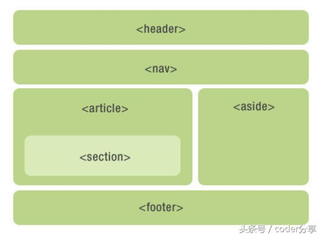

HTML5新特性
HTML5的新增特性主要是针对于以前的不足，增加了一些新的标签、新的表单和新的表单属性
这些新特性都有兼容性问题，基本是IE9以上版本的浏览器才支持
HTML5新增的语义化标签
div对于搜索引擎来说并没有语义
HTML5新增的语义化标签：header头部标签 nav导航标签 article内容标签 section定义文档的某个区域 aside侧边栏标签 footer尾部标签
注意：
- 这种语义化标准主要是针对搜索引擎
- 这些新标签页面中可以使用多次
- 在IE9中，需要把这些元素转换为块级元素
- 移动端更普遍使用这些标签
HTML5新增的多媒体标签
新增的多媒体标签主要包含两个：音频：audio、视频：video，使用它们可以很方便的在页面中嵌入音频和视频，而不需要使用flash和其他浏览器插件
视频video
HTML5在不使用插件的情况下，也可以支持视频格式文件的播放，但是支持的格式是有限的
video标签只支持三种视频格式MP4、WebM、Ogg，尽量使用MP4格式，是一个双标签
| 浏览器 | MP4 | WebM | Ogg |
|---|---|---|---|
| Internet Explorer | YES | NO | NO |
| Chrome | YES | YES | YES |
| Firefox | YES 从 Firefox 21 版本开始 Linux 系统从 Firefox 30 开始 |
YES | YES |
| Safari | YES | NO | NO |
| Opera | YES 从 Opera 25 版本开始 |
YES | YES |
语法：<video src="文件地址" controls="controls"></video>
可能有的浏览器不支持视频格式，那么我们可以使用下面的语法，放多个视频，如果视频都不支持，会显示文字
- <video src="文件地址" controls="controls" width="xx">
- <source src="xx.ogg" type="video/ogg">
- <source src="xx.mp4" type="video/mp4">
- 您的浏览器暂不支持video标签播放视频
- </video>
| 属性 | 值 | 描述 |
|---|---|---|
| autoplay | autoplay | 视频就绪后自动播放，谷歌浏览器需要添加muted来解决自动播放问题 |
| controls | controls | 向用户显示控件，比如播放按钮。 |
| width | pixels | 设置视频播放器的宽度。 |
| height | pixels | 设置视频播放器的高度。 |
| loop | loop | 当媒介文件完成播放后再次开始播放。 |
| muted | muted | 视频的音频输出为静音。 |
| poster | URL | 规定视频正在下载时显示的图像，直到用户点击播放按钮。 |
| preload | auto（预先加载视频） metadata none（不加载视频） |
视频在页面加载时进行加载，并预备播放。如果使用 "autoplay"，则忽略该属性。 |
| src | URL | 要播放的视频的 URL。 |
音频audio
当前audio元素支持三种音频格式：MP3、Wav、Ogg，audio也是一个双标签，音频标签和视频标签使用方式基本一致
语法：<audio src="文件地址" controls="controls"></audio>
如果考虑兼容性问题，与video标签类似，audio有下面的语法
- <audio src="文件地址" controls="controls" >
- <source src="xx.ogg" type="audio/ogg">
- <source src="xx.mp3" type="audio/mpeg">
- 您的浏览器暂不支持audio标签播放视频
- </audio>
常见属性
| 属性 | 值 | 描述 |
|---|---|---|
| autoplay | autoplay | 音频在就绪后马上播放 |
| controls | controls | 向用户显示控件，比如播放按钮 |
| loop | loop | 当音频结束时重新开始播放 |
| src | url | 要播放的音频的url |
注意：谷歌浏览器把音频和视频自动播放禁止了，可以给视频标签添加muted属性来静音播放视频，音频可以通过JS解决
HTML5新增的input类型
当我们点击提交按钮会验证表单，如果不满足会报错
- email限制用户输入必须为Email类型
- url限制用户输入必须为URL类型
- date限制用户输入必须为日期类型
- time限制用户输入必须为时间类型
- month限制用户输入必须为月类型
- week限制用户输入必须为周类型
- number限制用户输入必须为数字类型
- tel限制用户输入必须为手机号码类型
- search为搜索框
- color生成一个颜色选择表单
HTML5新增的表单属性
| 属性 | 值 | 说明 |
|---|---|---|
| required | required | 表单拥有该属性表示其内容不能为空，必填 |
| placeholder | 提示文本 | 表单的提示信息，存在默认值将不显示 |
| autofocus | autofocus | 自动聚焦属性，页面加载完成自动聚焦到指定表单 |
| autocomplete | off/on | 当用户在字段开始键入时，浏览器基于之间键入过的值，应该显示出在字段中填写的选项。默认已经打开，autocomplete="on"，关闭autocomplete="off"需要放在表单内，同时加上name属性，同时成功提交 |
| multiple | multiple | 可以多选文件提交 |
我们可以通过input::placeholder {color: xx;}这种方式更改placeholder里面的字体颜色
广义的HTML5
广义的HTML5是HTML5本身+CSS3+JavaScript，虽然HTML5的一些特性仍然不被某些浏览器支持，但是它是一种发展趋势